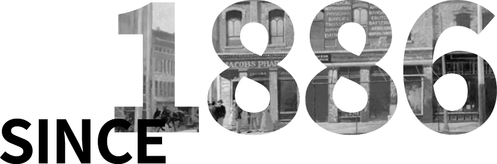

We are The Coca-Cola Company
130년의 코카-콜라, 그 여정
1886년 5월 8일, 존 펨버턴(John Pemberton) 박사가 미국 조지아주 애틀랜타에 있는 제이콥스 약국(Jacobs’ Pharmacy)에서 코카-콜라를 처음으로 발명했다. 130여 년이 지난 지금, 코카-콜라 컴퍼니(The Coca-Cola Company)는 전 세계 200여 개국 이상에 진출한 글로벌 종합음료회사로 성장했다. 스파클링, 주스, 차, 커피, 스포츠 음료 등 총 200여 개의 브랜드를 보유하고 있다.
코카-콜라, 130여 년의 히스토리한국에서는 1968년부터 코카-콜라가 정식으로 생산 및 판매되기 시작했다.
대표 브랜드인 코카-콜라를 비롯해 스프라이트, 환타, 미닛메이드, 조지아, 토레타!, 파워에이드 등 20여 개 음료 브랜드를 국내에서 생산 및 판매하고 있다.
코카-콜라 시스템은 원액 생산, 상표 관리와 마케팅을 담당하는 ‘코카-콜라사’와 완제품을 생산, 유통, 판매하는 ‘보틀링 파트너’로 운영된다. 국내 보틀링 파트너는 현재 LG생활건강의 자회사인 코카-콜라 음료 주식회사가 담당하고 있다.
[특별 기획] 애틀랜타 본사, 박물관에 가다
코카-콜라 미국 본사와 월드 오브 코카-콜라(World of Coca-Cola)
박물관이 궁금하다면? 박준형과 함께한 본격 코카-콜라 체험기!